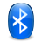

KDE-Systemeinstellungen
Dieser Artikel wurde für die folgenden Ubuntu-Versionen getestet:
Ubuntu 16.04 Xenial Xerus
Ubuntu 14.04 Trusty Tahr
 KDE besitzt zur Konfiguration des Systems standardmäßig ein einfaches Programm, das sich auf die wichtigsten Einstellungsdialoge fixiert und diese in der Übersicht als große Symbole und über den Menüpunkt "Einrichten" auch als klassische Baumansicht darstellt. Es lässt sich via "Menü → Rechner → Systemeinstellungen" aufrufen. Von der Oberfläche Unity aus kann man die Windows-Taste betätigen und das Programm KDE System Settings aufrufen (ggf. Paket systemsettings nachinstallieren).
KDE besitzt zur Konfiguration des Systems standardmäßig ein einfaches Programm, das sich auf die wichtigsten Einstellungsdialoge fixiert und diese in der Übersicht als große Symbole und über den Menüpunkt "Einrichten" auch als klassische Baumansicht darstellt. Es lässt sich via "Menü → Rechner → Systemeinstellungen" aufrufen. Von der Oberfläche Unity aus kann man die Windows-Taste betätigen und das Programm KDE System Settings aufrufen (ggf. Paket systemsettings nachinstallieren).
Dort kann man von Systemeinstellungen wie den Netzwerkeigenschaften bis hin zu individuellen Einstellungen wie dem Aussehen der Fenster oder der Arbeitsflächeneffekte eine Menge einstellen. Diese Liste soll einen kurzen Überblick geben, wo welche Einstellungen zu finden sind.
Alternativ kann man (z.B. auf Systemen ohne KDE-Oberfläche) den Kommandozeilenbefehl kcmshell4 MODULNAME nutzen, um einzelne Bereiche gezielt aufzurufen. Die konkreten Modulnamen sind der
kcmshell4 --list
zu entnehmen, ein praktisches Beispiel ist im Artikel Phonon zu finden.
| Allgemeines Erscheinungsbild und Verhalten | ||
| "Anwendungs- und Systembenachrichtigungen" | Visuelle und akustische Benachrichtigungen, sowie weitere Aktionen bei verschiedenen Ereignissen, und Rückmeldung der Programmstartanzeige. | |
| "Benutzerkontodetails" | Benutzerinformationen wie Passwort, Name und E-Mail-Adresse, Pfadangabe für die Dateiablage, Passwortverwaltung, Open-Collaboration-Dienste, Webkürzel. | |
| "Dateizuordnungen" | Verwaltung welche Programme für welchen Dateityp zuständig sind. | |
 | "Erscheinungsbild von Anwendungen" | Das Aussehen von KDE, Qt und GTK+ Anwendungenan die eigenen Wünsche anpassen. |
 | "Kurzbefehle und Gestensteuerung" | Tastenkombinationen, Mausgesten, etc. für verschiedene Programme und Aktionen konfigurieren. |
| "Persönliche Informationen" | Ressourcen für Kontakte, Notizen oder Kalender definieren, so dass sie systemweit in Programmen Verwendung finden. | |
| "Regionales" | Installation von weiteren Sprachen, Konfiguration von Spracheinstellungen und Rechtschreibprüfung für verschiedene Sprachen. | |
| Erscheinungsbild und Verhalten der Arbeitsfläche | ||
 | "Arbeitsflächen-Effekte" | Arbeitsflächeneffekte |
| | "Erscheinungsbild der Arbeitsfläche" | Fensterdekoration, Arbeitsflächen-Design, Startbildschirm und Mauszeigerdesigns an die eigenen Wünsche anpassen. |
 | "Desktopsuche" | Bis einschließlich Ubuntu 13.10: Einstellungen zur Desktop Suche mittels Nepomuk und Strigi. Ab Ubuntu 14.04: Konfiguration von Baloo  . . |
 | "Fensterverhalten" | Anwendungsumschalter, Virtuelle Arbeitsflächen, Bildschirmecken, Fenstereigenschaften und Fensterregeln verändern. |
| "Standard-Komponenten" | Definition von Standardprogrammen für Terminal, Editor, Datei- & Fenstermanager, Instant Messenger, Webbrowser und E-Mail-Client. | |
 | "Verhalten der Arbeitsfläche" | Virtuelle Arbeitsflächen, Aktionen für aktive Arbeitsflächenränder und Einstellungen zum Arbeitsbereich (bspw. ändern des Typs: Desktop / Netbook) |
| "Zugangshilfen" | Einstellungen, um die Bedienung des Systems auf Menschen mit Behinderungen zu erleichtern. | |
| Netzwerk und Verbindungen | ||
|  | "Bluetooth" | Verwaltung von Bluetooth Geräten, Dateiübertragungen und Sicherheitseinstellungen |
| "Freigabe" | Netzwerkfreigaben erstellen bzw. Freigaben im System einbinden. Mehr dazu unter Samba bzw. NFS. | |
| "KPartsPlugin" | Sofern über das Paket kpartsplugin installiert, Konfiguration von KParts . | |
 | "Netzwerk-Einstellungen" | Netzwerkverbindungen, Proxy-Server angeben sowie zahlreiche weitere Optionen rund um Netzwerkeinstellungen. |
| | "SSL-Einstellungen" | Verwaltung von SSL-Versionen und -Zertifikaten |
| "Instant Messaging und VoIP" | Instant Messaging und VoIP Zugänge einrichten. | |
| Hardware | ||
 | "Anzeige und Monitor" | Bildschirmauflösung, mehrerer Monitore für eine Arbeitsfläche, Farbwerte und Bildschirmschoner einrichten. |
| "Digitalkamera" | Einstellungen, um auf eine angeschlossene Digitalkamera zugreifen zu können. | |
| "Drucker" | Drucker und deren Netzwerkfreigaben verwalten. | |
| | "Eingabegeräte" | Tastatureinstellungen und -belegungen, Touchpad, Maus, sowie Joysticks und Gamepads konfigurieren. |
 | "Engergieverwaltung" | Einstellungen zur Energieverwaltung. |
 | "Farbe" | Farbeinstellungen für verschiedene Geräte wie Drucker oder Webcam vornehmen. |
| "Geräte-Aktionen" | Einrichten von Aktionen, die ausgeführt werden sollen, wenn neue Geräte an den Rechner angeschlossen werden. | |
| | "Informationsquellen" | Backends für die Hardwareschnittstelle Solid konfigurieren. |
| "Wechselmedien" | Automatischen Umgang mit Wechselmedien einrichten. | |
| "Multimedia" | Verwaltung der Hardware zur Audio-Ausgabe/Aufnahme/Kodierung und deren Backends. | |
| Systemverwaltung | ||
 | "Anmeldebildschirm" | Den LightDM Anmeldebildschirm einrichten. |
 | "Benutzerverwaltung" | Erstellen und Einrichten von Benutzerkonten und Gruppen. |
 | "Datum & Zeit" | Datum, Uhrzeit sowie die Zeitzone einstellen. Ebenso ist es hier möglich einen NTP-Zeitserver einzutragen, an den die Uhrzeit des Systems angeglichen werden soll. |
| "Diagnostics" | Ab Ubuntu 14.04: Fehlerberichte an Canonical schicken. | |
| "Driver Manager" | Ab Ubuntu 14.04: Ersatz für die Applikation Zusätzliche Treiber. | |
| "Schriftarten-Verwaltung" | Verwaltung aller Schriftarten, die im System verwendet werden. Es können persönliche Schriftarten hinzugefügt werden. | |
 | "Starten und Beenden" | Autostart, Diensteverwaltung und Sitzungsverwaltung |
| "Über das System" | Ab Ubuntu 13.10: Systeminformationen | |
- Erstellt mit Inyoka
-
 2004 – 2017 ubuntuusers.de • Einige Rechte vorbehalten
2004 – 2017 ubuntuusers.de • Einige Rechte vorbehalten
Lizenz • Kontakt • Datenschutz • Impressum • Serverstatus -
Serverhousing gespendet von